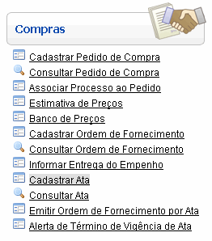
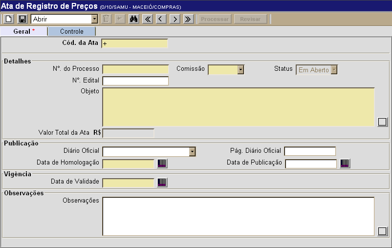

Cadastrar Ata [ Voltar ]Utilize este formulário para cadastrar no sistema as atas de registro de preços existentes. Para acessar esta tela, vá ao menu "Compras" na tela inicial e clique em "Cadastrar Ata".
Após clicar no nome do formulário, o sistema abrirá a seguinte tela: 
Para cadastrar uma ata, siga os passos abaixo. 1º Passo: informe os dados da ata que deseja cadastrar. Os campos em amarelo são obrigatórios. Dicas para preenchimento dos campos de data:
Exemplo: se a data atual é 20/10/2010, digite "+10" e pressione a tecla "Enter" para que o sistema retorne o dia 30/10/2010. 2° Passo: clique no botão  para
salvar os dados da ata. para
salvar os dados da ata. 3° Passo: se todos os dados da ata estiverem corretos, clique no botão  para concluir o cadastro. Assim que o registro da ata é concluído, o botão ficará habilitado para eventuais revisões das informações da ata. para concluir o cadastro. Assim que o registro da ata é concluído, o botão ficará habilitado para eventuais revisões das informações da ata. Importante: após concluir as revisões em uma ata de registro de preço, será necessário processar o registro novamente, como descrito no passo 3. |